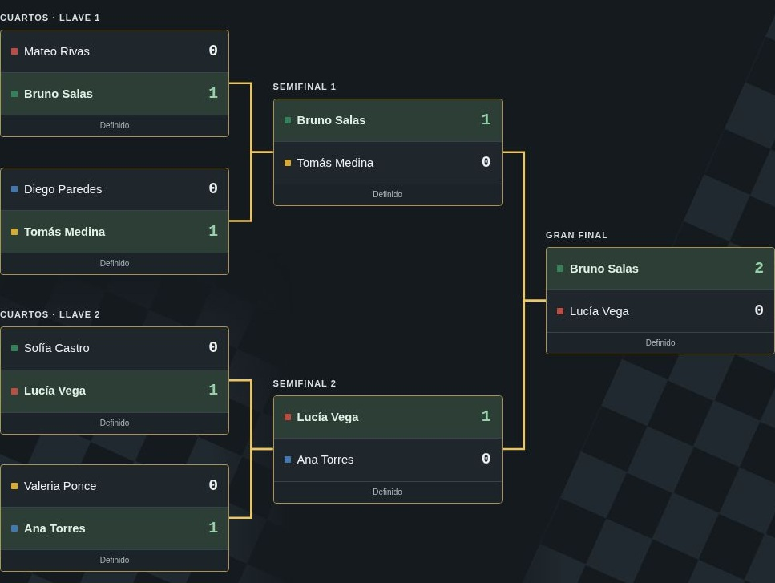
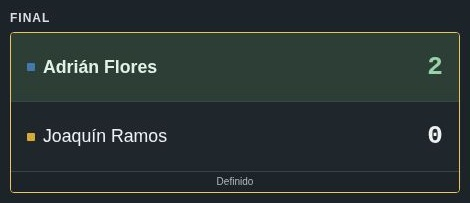
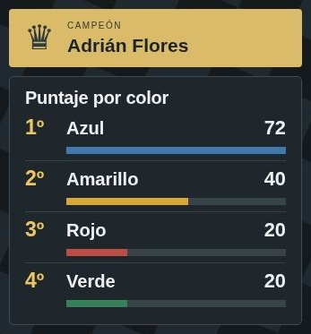

Preparar el torneo
Cada categoría tiene ocho jugadores: dos por color. Son tres torneos independientes.
- Registra los nombres en Configuración. A es quien cursa mayor grado; a igual grado, quien tiene mayor edad. B es el otro participante.
- Revisa la conducta y los multiplicadores. Las penalizaciones se anotan una sola vez por color y se comparten entre categorías.
- Pulsa Guardar cambios. Para corregir la configuración guardada, pulsa Editar y vuelve a guardar.
- Abre el panel del árbitro de la categoría. Sortea o asigna los cuatro colores y confirma las llaves o los grupos.

Anuncia la regla especial: en cuartos y semifinales, el jugador con rey ahogado pierde. En la final, el ahogado sigue siendo tablas.
Primaria
Tiempo compartido de primaria
Cada partida normal, revancha y partida de la final tiene un límite compartido de 20 minutos, no 20 por jugador. Al agotarse, se suman los puntos de las piezas que quedan: gana quien tenga más material. Es una medida extrema, no el final esperado de una partida.
El árbitro puede permitir el desenlace natural si está próximo. Con material igualado puede esperar a que aparezca una ventaja; después de una captura deben transcurrir como mínimo dos medios-movimientos para no decidir durante un intercambio.
Si esto sucede en la segunda partida de cuartos o semifinales, tras tablas regulares en la primera, el material igualado se registra como empate y avanza directamente B efectivo. En la final sigue vigente el Armagedón ante 1–1.
A los estudiantes de primaria se les menciona que existe una regla de desempate; se les explica si preguntan. No se presenta como una estrategia para conservar un peón y dejar correr el tiempo.
¿Quién inicia con blancas?
A contra B: inicia B.
A contra A o B contra B: inicia el de menor grado; a igual grado, el más joven. El árbitro lo asigna en el panel.
Cuartos y semifinales
- Juega la partida y registra el resultado.
- Si hay tablas, juega la revancha con piezas invertidas.
- Si persiste el empate, avanza el color con menos penalizaciones.
- Si la conducta también empata, avanza quien inició con blancas.

Se juegan dos partidas, una con cada color. Si terminan 1–1, incluidas dos tablas, pasan directamente al Armagedón. En esta final, el ahogado es tablas.
Secundaria baja y alta
El formato es el mismo en ambas categorías. Cada una conserva sus propios nombres, grupos, resultados y final.
Cada estudiante de secundaria lleva su celular exclusivamente para usar Chess Clock de Chess.com. Se utiliza uno por tablero: bastan cuatro para los ocho jugadores de una categoría; pedir que todos lo lleven asegura equipos de respaldo.
La aplicación es gratuita, sin anuncios, sencilla y ligera. Permite pausar y ajustar el tiempo de cada jugador. Instálala antes de la jornada y prueba el reloj con la batería cargada y las notificaciones silenciadas.
Cuándo cuenta una jugada en secundaria
La jugada solo se considera realizada al presionar el reloj. Esta regla sustituye a pieza tocada, pieza movida. Una jugada ilegal se reclama después de que el rival haya pulsado.
Si el rival mueve pero olvida pulsar, es legal quedarse pensando mientras corre su tiempo. Esto se advierte expresamente como incentivo para atender al reloj. Si pasan dos medios-movimientos sin que ninguno pulse, el árbitro pausa, les advierte y reanuda con el reloj del jugador que debe mover.
Si el celular se apaga, se vuelve a encender. Se exige avisar previamente que llegue bien cargado.
Jugada ilegal en secundaria
- Pausa el reloj si detectas una jugada ilegal de tu oponente después de que pulse su reloj.
- Llama al profesor encargado. El árbitro comprueba la infracción.
- El árbitro añade 30 segundos a tu reloj si confirma la jugada ilegal del rival y reanuda la partida. Los jugadores no modifican el tiempo por su cuenta.
Registrar los grupos
- Confirma el sorteo. Los primeros dos colores aportan sus A al Grupo A y sus B al Grupo B; los otros dos colores hacen lo inverso.
- Juega las tres rondas de la pestaña Grupos. Son dos tableros simultáneos por grupo. Cada jugador disputa tres partidas: A lleva negras dos veces y B lleva blancas dos veces.
- Registra cada resultado en su desplegable. Victoria: 2 puntos; tablas: 1; derrota: 0. Cada partida es de cinco minutos por jugador, sin incremento.
- Revisa Clasificación. Solo el líder de cada grupo avanza. Si queda un empate total, tiene prioridad B; entre participantes del mismo rol, registra al B efectivo por menor grado y luego menor edad.

Orden de desempates dentro de un grupo
- Puntos.
- Mini-clasificación entre los jugadores empatados.
- Enfrentamiento directo cuando quedan dos; si hicieron tablas, favorece a quien llevó negras.
- Sonneborn-Berger (SB).
- Victorias.
- Menos penalizaciones de conducta.
- Prioridad B; entre jugadores del mismo rol, B efectivo por menor grado y luego menor edad. El árbitro registra ese criterio, no decide libremente.
La clasificación del panel aplica estos criterios. SB pondera los resultados según los puntos obtenidos por los rivales.
Jugar la final
La final se genera cuando los grupos están completos y ambos líderes están definidos. No hay semifinales ni partido por el tercer puesto.
Elige quien tuvo mejor desempeño en grupos: puntos, SB, victorias y conducta, en ese orden. Si todo empata, elige B; con el mismo rol, el B efectivo por menor grado y luego menor edad. No se usa enfrentamiento directo entre grupos.
Quince minutos por jugador, sin incremento. En la segunda partida se invierten las piezas. Se juegan ambas; si terminan 1–1, se pasa directamente al Armagedón.

Tiempos para organizar una secundaria
| Etapa | Juego máximo |
|---|---|
| Grupos con cuatro tableros, en paralelo | 30 min |
| Final: dos partidas de 15+0 | 60 min |
| Armagedón, si hace falta | 30 min |
| Total de estas partidas | 120 min |
Con dos tableros y grupos sucesivos, los grupos ocupan hasta 60 minutos y el total sube a 150. Añade margen para preparación, pausas, pujas y posibles desempates de grupos. Son máximos de juego base. Las pausas y los 30 segundos concedidos por jugadas ilegales se suman aparte; no fijan el límite de la jornada.
Armagedón
Se aplica directamente cuando una final termina 1–1, también si fueron dos tablas.
- Pide una puja secreta a cada jugador. Cada uno escribe un tiempo de 0 a 15 minutos, con precisión de un segundo. Entregan ambos papeles a la vez.
- Registra las pujas en el panel. El menor tiempo obtiene negras y ese tiempo de reloj. El otro jugador lleva blancas con 15 minutos.
- Explica la condición de victoria. Blancas debe ganar; con tablas, gana negras. No hay incremento.
- Juega y registra al ganador. Si hubo tablas, registra al jugador de negras.
Ejemplo: con pujas de 8:00 y 10:00, la de 8:00 obtiene negras. Blancas recibe 15:00.
Repite la puja. Tras tres coincidencias, el panel habilita el sorteo de piezas como último recurso.
Puestos y puntos
Los puestos compartidos reciben el mismo puntaje. No se desempata entre participantes del mismo escalón.
| Puesto | Primaria | Cada secundaria |
|---|---|---|
| Campeón | 8 | 20 |
| Subcampeón | 4 | 12 |
| 3.º–4.º | 2 cada uno | 4 cada uno |
| 5.º–6.º | 5.º–8.º: 1 cada uno | 2 cada uno |
| 7.º–8.º | 1 cada uno | |
| Total base | 20 | 46 |
| Ajuste de reparto | ×2.3 | ×1 |
Calcular el aporte de cada color
Primaria reparte 20 × 2.3 = 46, igual que cada secundaria. Ese ajuste compensa el reparto de puntos. Después, el multiplicador de Configuración adapta el resultado a la escala de las olimpiadas.
Se conservan los decimales. El puntaje es provisional hasta resolver la final.

Pantallas y respaldos
Hora de inicio y reemplazos
No hay tolerancia: la partida empieza a su hora y el reloj del ausente corre en secundaria. En primaria comienza el tiempo compartido. Ante inasistencia o negativa a jugar, el color debe elegir un reemplazo. Solo en ese caso se admite subir a alguien desde una categoría inferior; nunca bajar de categoría.
Registra la sustitución y comprueba su A/B por grado y edad antes de continuar. El cronograma y los recursos siguen pendientes de coordinar.
Árbitro y resultados
Abre ambas pantallas en el mismo navegador y computadora. Los resultados se actualizan entre pestañas.
Los datos se guardan en ese navegador. Usa siempre el mismo perfil y dirección del sitio. Evita el modo privado y no borres los datos del navegador.
Exportar e importar
Al pie de cada panel, abre Copia de seguridad y pulsa Exportar estado. Copia el contenido a un archivo de texto.
Para recuperarlo, pega ese contenido y pulsa Importar estado en la categoría correspondiente.
No incluye nombres, conducta ni multiplicadores de Configuración. Las copias de secundaria baja y alta no se pueden intercambiar. Reiniciar una categoría no borra las demás.
Qué pasa al corregir resultados
Corrige el resultado desde su desplegable. Si cambia un finalista de secundaria, se crea la nueva final sin los resultados anteriores. Si cambias una partida de la final, se elimina su Armagedón.
Tras corregir, revisa la clasificación y la final antes de seguir.